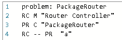
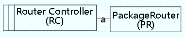
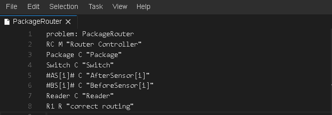
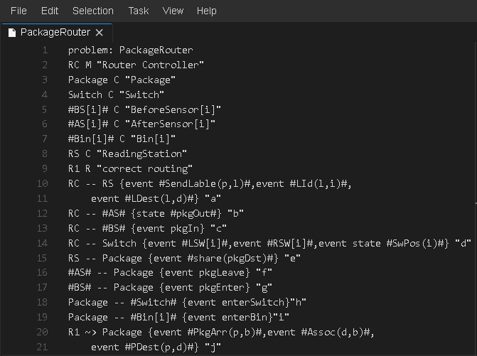
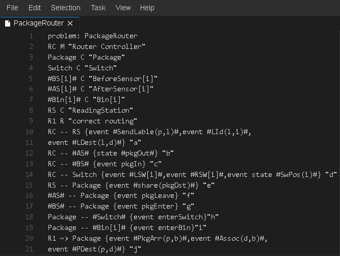
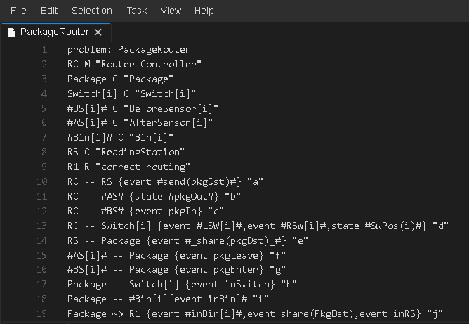
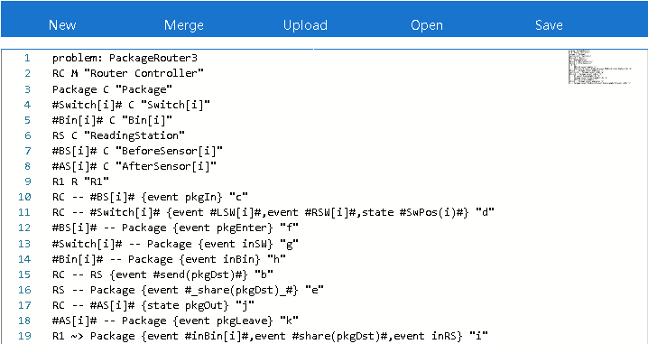

Although continuous consistency (CC) problem frames (PF) editors remove the need of manual edits after conflict detection, it may still increase the amount of manual edits before conflict detection. Therefore, the achievement of CC can only be measured empirically by considering the rate of convergence to fixed models, rather than by counting the number of manual edits. We designed a controlled experiment with two user groups, each of which includes 2 undergraduate students from a university. Group 1 does the collaborative editing through non-collaborative modeling tools, while Group 2 does the editing using our tool.
In preparation, all users are trained to use the non-collaborative version of the PF editors to understand the grammar of Problem Frames so that the familiary to the DSL does not get in the way of evaluating the collaboration features. Aside from these features, the functions of the tools are exactly the same.
During the experiments, both controlled Groups edit the same project from the same initial version, a simplified context diagram of Package Router from the textbook on Problem Frames. The task only considers the requirement of correct routing. It took longer time for Group 1 to understand and negotiate the modification of the other users because the modification of other users are not be known in real time. Group 2 uses our tools to synchronize modifications. Each user can see the modification of the other party in real time. In addition, continuous consistency is trivial when there was no conflict. When there was a conflict, after 3-way merge, the merged version contains two modifications. There was a conflict, e.g., when User3 deleted PackageRouter, and User4 changed the name of PackageRouter to Package. Since User4's modification is newer, the merged version contains only User4's modification. Finally, the merged versions of User3 and User4 become the same.
|  |  |
|
Textual representation of the initial version |
Graphical representation of the initial version |
Group 1 obtained the final version after four consultations and amendments. there was only one consistent version in the round 4. It took 137 minutes to get the consistent version. In total, there were 264 semantic modifications, including 217 non-conflicting modifications, 47 conflictmodification, and 91 location modifications, which include 23 textual layout adjustments and 68 graphic layout adjustments.
The first round of modification took 46 minutes and there were 33 semantic modifications, of which 27 had no conflicts and 6 had conflicts. 11 non-semantic modifications, including 4 text layout adjustments and 4 graph layout adjustments. The revised version is shown below.
The second round of modification took 56 minutes, with 171 semantic changes, of which 141 had no conflicts and 30 had conflicts, and 57 layout adjustments, including 14 text layout adjustments and 43 graphic layout adjustments. User1 modified Bin1 and Bin2 to Bin[i] and reached agreement with User2. User1 changed RS to Reader, and User2 changed Reader to RS, which was still inconsistent. The two added connections and phenomena on this basis, and the revised version is shown below.
In the third round of modification, User1 changed Sensor[i] to BS[i] and AS[i], changed Reader to RS, and modified the phenomena on RC -- AS[i], RC -- BS[i], AS[i] -- Package, BS[i] -- Package to be consistent with User2. User2 modifies the phenomenon on RC -- RS to be consistent with User1. Neither of them modified the conflict on Switch -- Package, Package -- Bin[i] and Package ~> R1. The revised version is shown below.
In the fourth round of modification, User1 changed the phenomenon pkgDst on Package ~> R1 to share (PkgDst), which is consistent with User2. User2 modified the phenomena on Switch--Package, Package--Bin[i] and Package ~> R1 to be consistent with User1, and changed the Switch to Switch[i]. After negotiation, User1 accepted the modification on switch, and the final version is shown below.
Group 2 used only 47 minutes. There were 84 consistent versions and 128 semantic modifications, 112 of which have no conflicts whilst 16 have conflicts which were automatically resolved. There are only 5 text layout adjustments and 78 graphicposition changes. The final version is shown below.
